DALLYDECK: Hybrid Card Deck & App to Help With Planning
Co-Creator // Team Member • HCDE 302/303
This HCDE302/303 (Foundations of Human Centered Design which are two courses/classes) project explored how to design and develop a product from a problem to a cohesive solution. I contributed as an active team member throughout the two quarters (~20 weeks) of research, designing, prototyping, and user testing, helping to ensure the team’s solutions were practical, user-centered, and well-documented.
Project Overview
Team Member // Co-Creator
Human-Centered Design, UX Research, Prototyping
September 2025 - March 2026
Interviews, Surveys, Storyboarding, Low/Mid/High Fidelity Prototypes, Product Development
We began by exploring challenges UW students face when planning social visits. I helped define our initial design question: "How can we make planning visits with non UW friends/family easier for UW students?". I also reamined an active member during our research activities, ideation, and prototyping and testing stages.
Research
My team and I conducted user interviews, surveys, and journey mapping to uncover pain points and opportunities related to planning. These insights informed design decisions and ensured our solution truly addressed user needs.
- Led semi-structured interviews and gathered qualitative feedback from target users
- Contributed to affinity mapping and insight synthesis
- Helped create personas and journey maps to guide ideation
Through our research we found that UW students had a hard time planning visits due to limited time related to college, students often also wanted to keep family and college seperate, and students wanted a single tool that was easy to use in a flexible informal setting. This ultimately lead to us
tweaking our design question to: "How might we design an accessible way for UW undergraduate students to share their campus and community with non-UW visitors?"
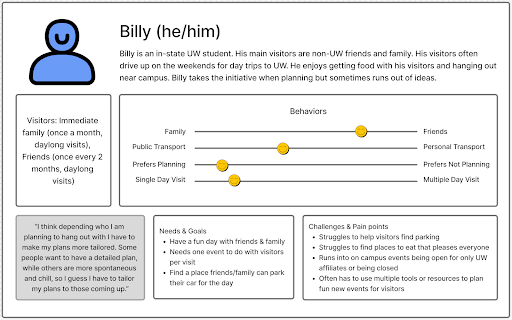
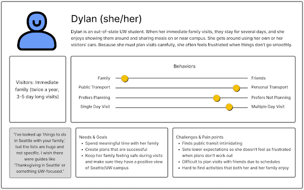
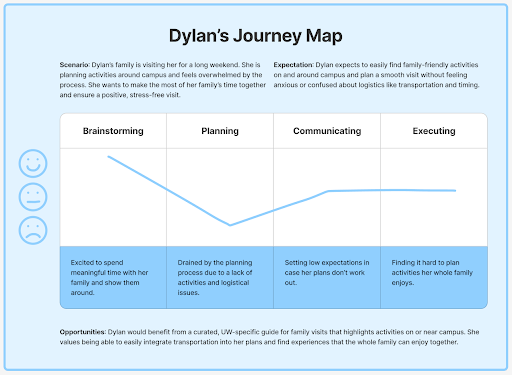
Concept Design
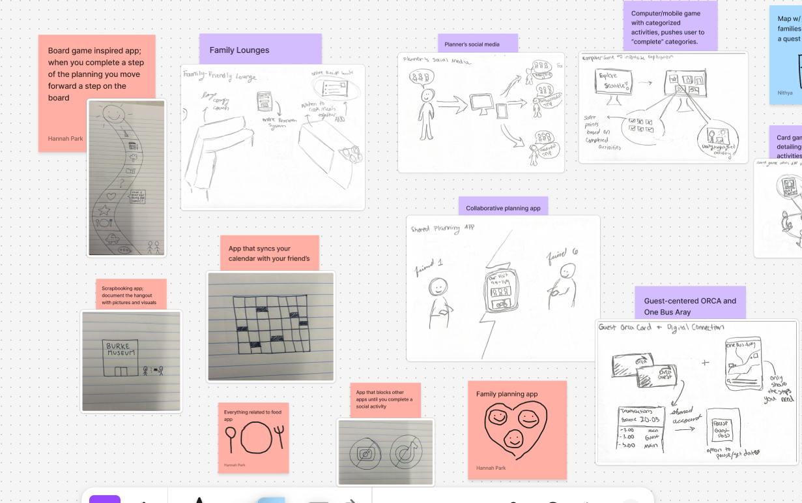
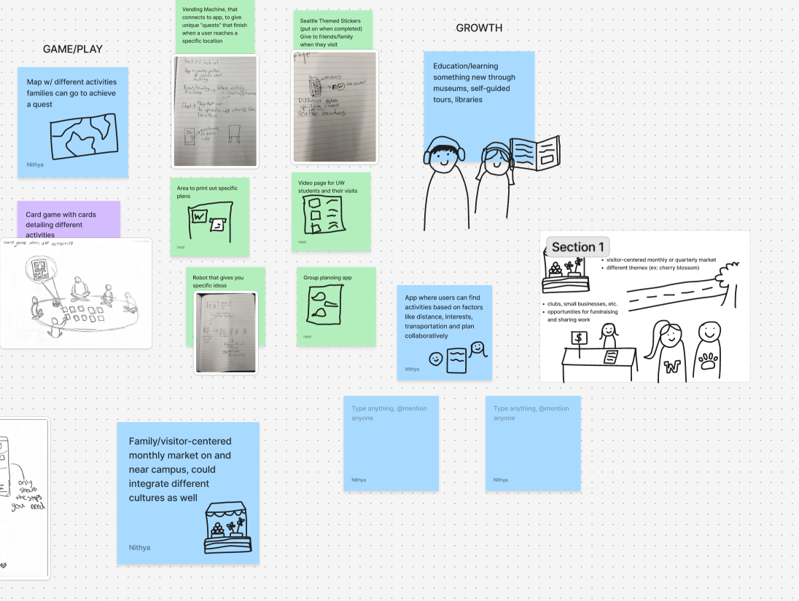

During brainstorming sessions, my team and I thought of many solutions to creating a tool that best solved our design question. This meant weighing the benefits of different designs and discussing what we wanted our prototype to look like.
- Developed sketches, storyboards, and concept visuals
- Collaborated with team, to make difficult design decisions
- Evaluated and prioritized concepts based on feasibility and impact
After picking our three favorite design ideas, we showcased our work to a panel of UX designers and researchers to get input on our product. This professional presentation helped me work on my showcasing skills
and led us to choose our final concept, that being a card deck displaying events throughout Seattle.
Low Fidelity -> Concept Testing
We began creating our low-fidelity prototype by creating an information architecture and simple sketched wireframes to explore multiple ways our tool could address our design question. These early prototypes allowed us to visualize ideas and gather initial feedback without committing to detailed design decisions.
Early on we decided on implementing an app with our physical card deck, as to best present quick information physically and accurate, updated information digitally.
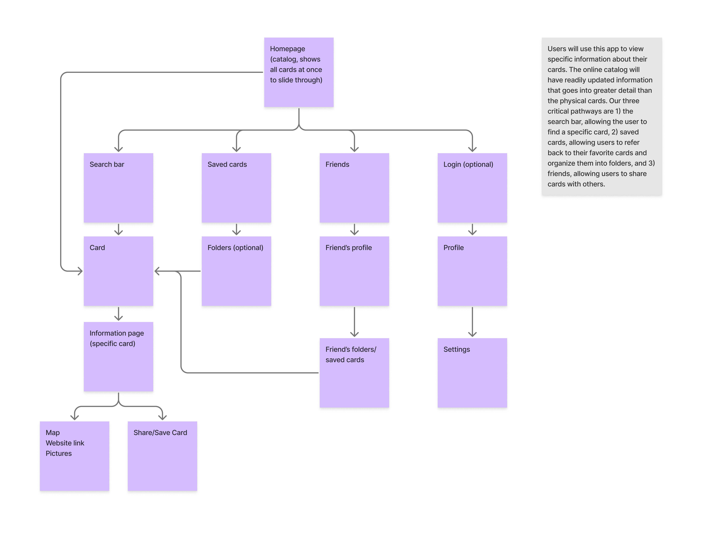


Next, we conducted concept testing with target users. Through interviews and usability exercises, we identified which features were most intuitive, which flows caused confusion, and what aspects of the design aligned with real user needs. This testing helped us choose which features to priortize, update, and change in our mid-fidelity prototype.
- Created low-fidelity sketches, storyboards, and paper prototypes to explore multiple design directions
- Conducted concept testing sessions to gather actionable feedback from target users
- Collaborated closely with team to evaluate trade-offs and prioritize features for usability and impact
Mid Fidelity -> Critique
Finally, we moved into mid-fidelity prototyping, translating our validated concepts into interactive digital prototypes. These mid-fidelity versions incorporated basic UI layout, labeling, and navigation patterns based off our past research.
Our mid-fi prototype was created on Figma.


After this stage we participated in another expert review where we shared our mid-fi prototype and idea with the previous UX professionals. This review gave us important information that we could implement into our final high-fidelity prototype.
This review personally helped me practice sharing my design decisions in a professional setting, this included backing my decisions and exploring other possibilities for change in our design.
- Iteratively refined ideas and translated validated concepts into mid-fidelity digital prototypes
- Created mid-fidelity prototype in Figma with basic UI layout, labeling, and navigation patterns based on research insights
- Conducted expert review with UX professionals to gather feedback on usability and design decisions
- Practiced articulating and defending design decisions in a professional setting
High-Fidelity Prototype
Based off our expert review and other feedback we implemented necessary changes into our design including:
- Implementing branding and logo to both cards and app. Making our cards and app all feel cohesive and under the same brand name.
- Using clear icons on both the card and app rather than emojis. This gave our cards a more cohesive feel as the emojis felt out of place.
- Integrating a map and friends page to our app. This fills out/completes all of our navbar options and gives users a good idea of all the options our app has to offer.
- Labelled elements of the app so users had a better understanding of what each button or pathway does.
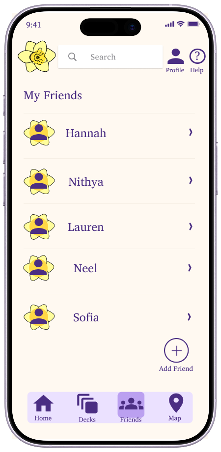
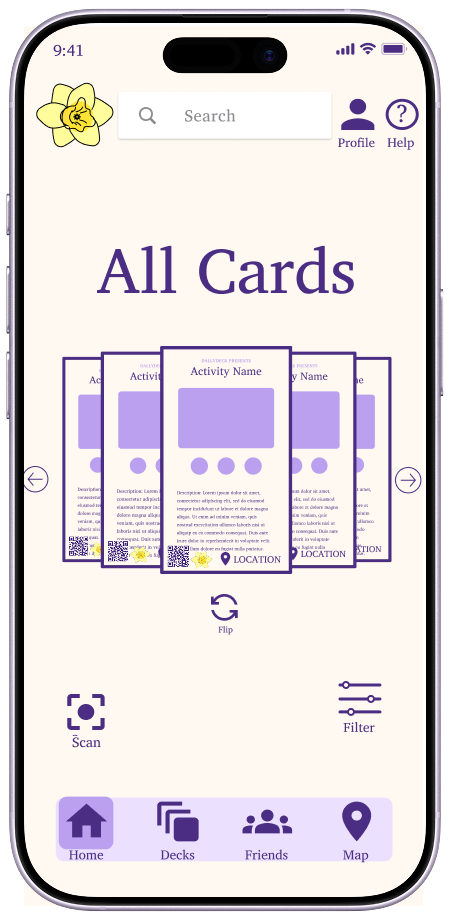
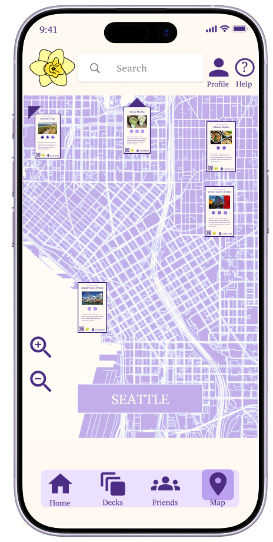


.png)
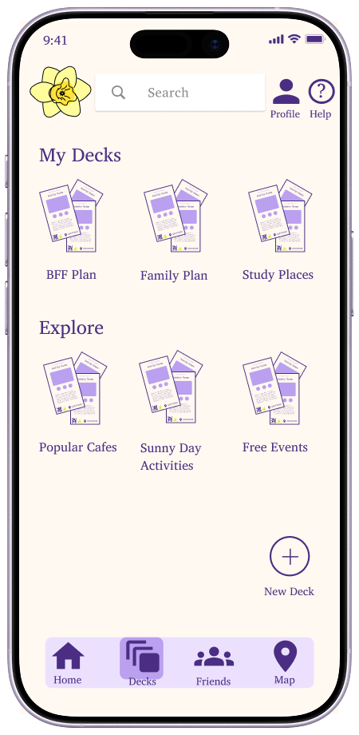

.png)
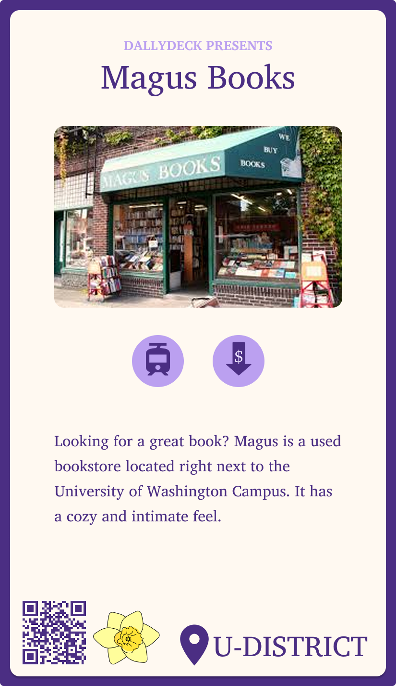
.png)

.png)
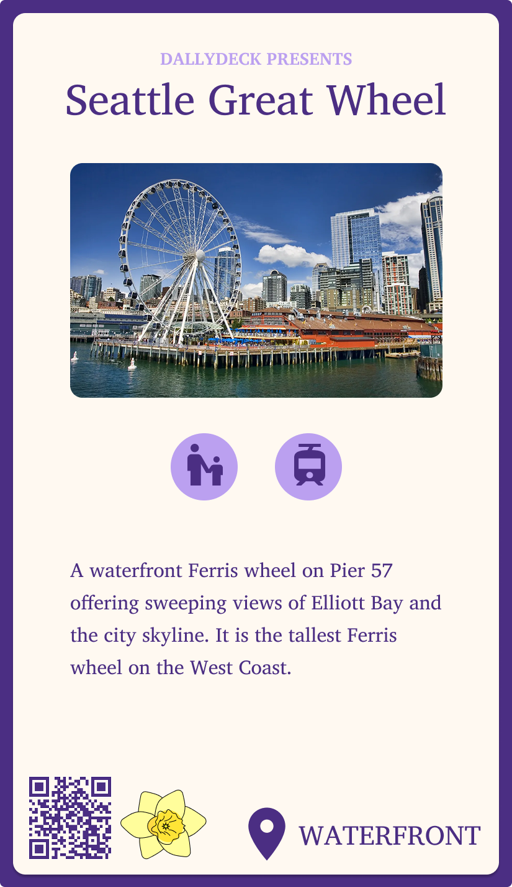


.png)

.png)
After finishing our prototype we also created a video to better explain/showcase our project (Found On Top).
We also shared our project with our classmates, TAs, and professor getting feedback and sharing our journey. We also finally created an
official website where you can find an overview of our journey and project.
Tools & Skills
- Human-Centered Research: semi-structured interviews, surveys, journey mapping, persona creation, need-finding, co-design sessions
- Prototyping & Design: storyboarding, low- & mid-fidelity paper prototypes, Figma for digital mid- and high-fidelity prototypes
- Interaction Design: UI layout, navigation patterns, labeling, iconography, information architecture
- User Testing & Evaluation: concept testing, iterative testing, expert review, usability feedback integration
- Collaboration & Communication: team brainstorming, design critique sessions, professional presentation of design decisions
- Documentation & Analysis: affinity mapping, insight synthesis, design decision logs, research-to-prototype translation
- Software & Tools: Figma, Google Slides/Docs, Miro, basic HTML/CSS for prototype mockups, video recording/editing for project demo
- Professional Skills: articulating design decisions, synthesizing feedback, balancing feasibility vs. user needs, presenting to stakeholders
Outcome & Reflection
This project highlights my ability to work collaboratively, lead research-informed design decisions, and translate insights into meaningful outcomes. Future steps include fully implementing our solution into the UW & Seattle ecosystem and continued user testing to refine our deck and app experience. This was
my (and also my teams) first full dive into product design and working on a prototype in Figma.
If I had to go back I would refine our mobile app making it more interactive with features like: a scroll deck and shuffle option.